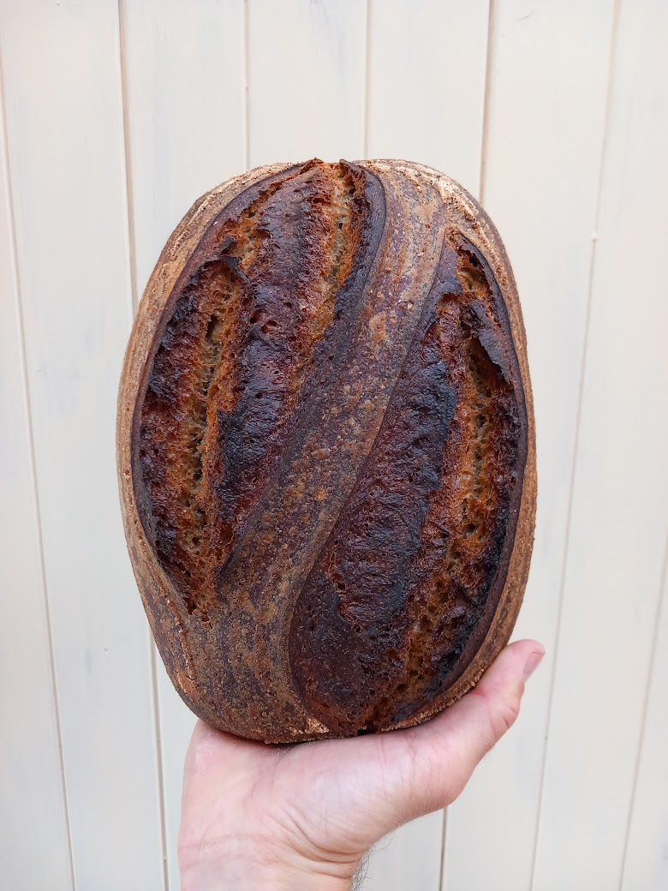
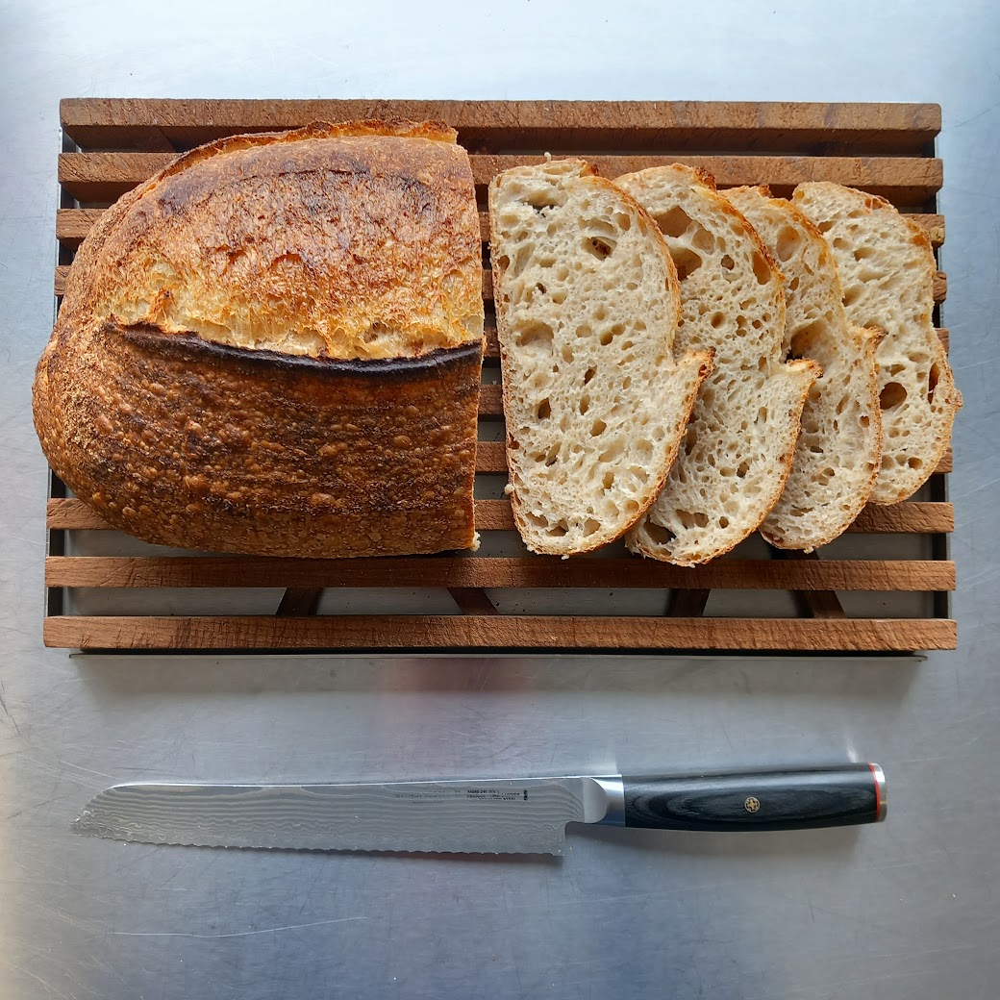
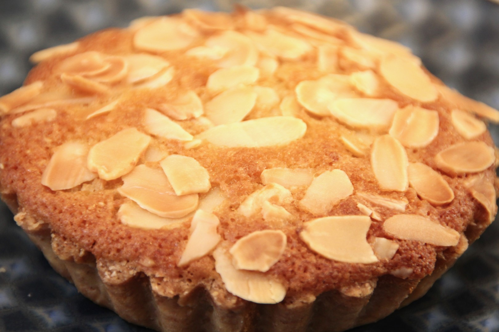

The Peatlands Loaf
Our signature country-style sourdough. Made with a blend of speciality flours, water and sea salt — nothing else. 32 hours in the making, baked to a golden crust with a wild open crumb.
🥇 Gold — World Bread Awards 2022What we make
Artisan sourdough, patisserie & sweet treats from Pete's award-winning microbakery — available exclusively to guests at Peatlands Causeway Coast.
Sourdough
Our signature country-style sourdough. Made with a blend of speciality flours, water and sea salt — nothing else. 32 hours in the making, baked to a golden crust with a wild open crumb.
🥇 Gold — World Bread Awards 2022
A hearty, naturally-leavened wholemeal loaf with a deeply flavoured crust and nourishing open crumb.

Classic country-style sourdough with a blistered crust and wild, open crumb. Made with speciality flour and nothing else.
Viennoiserie & patisserie

Classic laminated croissant — beautifully flaky with a rich, buttery depth of flavour.

Laminated croissant made with a rye flour blend — beautifully flaky with a distinctive depth of flavour.

Buttery laminated pastry wrapped around rich dark chocolate — a classic done properly.

Laminated Danish dough rolled with cinnamon filling — inspired by the classic Scandinavian original.

Twisted pastry knots filled with warm cinnamon and bright orange zest — a citrus twist on a bakery favourite.

Classic cinnamon knots — soft, fragrant and deeply satisfying.

Gloriously burnished, creamy and rich — our take on the iconic San Sebastián cheesecake.

Individual tarts with buttery pastry, jam and frangipane — a British classic made with care.
Cookies

Chewy, thick cookies made with quality dark-milk chocolate. Simple, perfect.
Pete's bakes are available to guests staying at Peatlands Causeway Coast — freshly made and delivered to your door.
Visit Peatlands